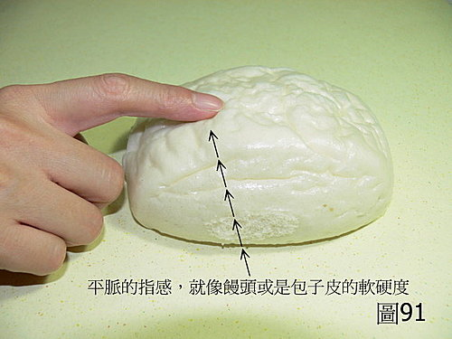
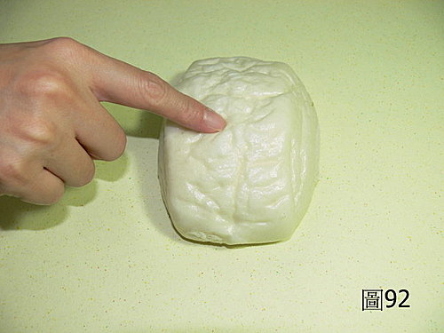
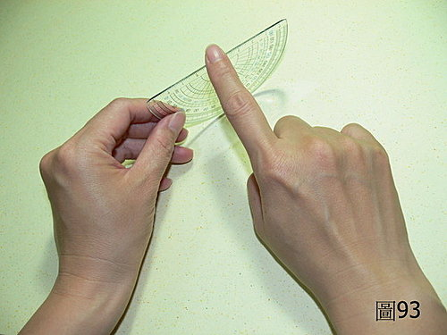
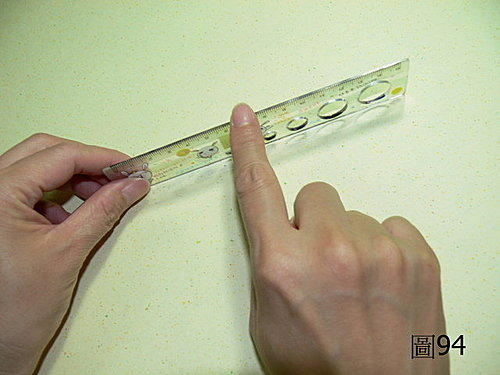
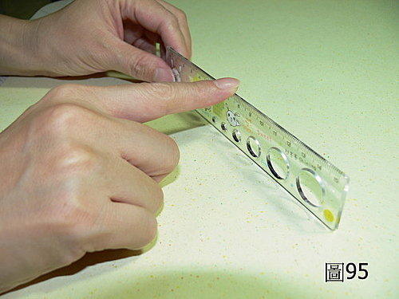

脈理醫理學 25.1：訂出平脈和病脈的標準（二）圖片說明
作者：陳建元
〈圖91、92〉是平脈的圖片，平脈摸起來的指感軟硬度以包子皮、饅頭、鼻尖的軟硬度為準，比這個還硬的是偏向實洪的脈象，比這個還虛軟無力的是偏向虛軟的脈象了。
【註：饅頭的軟硬度以正常剛買的普通的那種饅頭為準。放硬的或是超Q硬的那種皆不正確。】
〈圖93、94、95〉是平脈的標準寬度，以一個170公分的男子來看，大概是0.2公分的寬度，這個寬度用目測的不準，圖中是找約0.2公分寬度的尺來感覺。用手摸一摸，感覺熟悉這個標準寬度，這個寬度是標準的脈寬，比這個脈寬更寬的，是偏向大脈了，比這個寬度更窄的，是偏向小脈了。





或問：
陳老師您好：關於脈的大小，因為人有高矮胖瘦老少男女之不同，若以量尺的邊來看，反而不能活用，末學有一法，給您參考。我們看關的位置，關的意思，就是關口，關口的形狀把它倒過來就是個凹，外面的是銳骨，內部是筋，中間的就是脈道，這個脈道可以延伸至寸口及尺中。而我們把脈道分為三，每個占有1∕3脈道，內1∕3就是素問的關內，外1∕3，就是關外，而中間就是關中（正位），同理寸口及尺中亦然，凡脈大於1∕3脈道者為大，小於1∕3脈道者為小。不知此法可否？
答：
我這邊是用同身寸法的1∕8，以量尺的邊，主要是對約170公分的男子，大概找個實物模型，對剛接觸的人比較好掌控。1∕3的方法應該可行～我量了一下好像差不多。
唯分內外比較不妥──以臨床上看來，一脈管一對臟腑還能對應，以28脈的特徵和外症的表現，大概也能分出臟象上的臟腑，但古書為了配合陰陽的說法再細分內是臟、是陰，外是腑、是陽，其實不妥，並不符臨床現象。譬如肺脈實大，摸起來只有一條，沒有左右兩條，也沒有上下兩條，肺的一脈多葉有幾個地方，【參見脈理醫理學 56：一脈多葉現象與弱者先受規律（一）和脈理醫理學 56.2：一脈多葉現象與弱者先受規律（三）。】
這邊我務實的做法，就是直接配合問診外症來定位【參見第脈理醫理學 48：症脈雙鎖】，不做猜測的動作，譬如外感咳嗽，病位是肺系；如果是內傷便秘，病位是大腸；如果兩樣都沒有，患者是看皮膚紅腫，病位是皮膚，‥‥‥，我是配合外症和一脈多葉原理來抓，一切有證據才說話，脈法功能能到哪邊就到哪邊，不多做誇大多餘的猜測以神其說。
【引用請先來信告知徵求同意，若有涉及販售營利等商業行為，版權所有拷貝盜用必究。】
【藥王脈學講壇】http://blog.xuite.net/drjychen/twblog